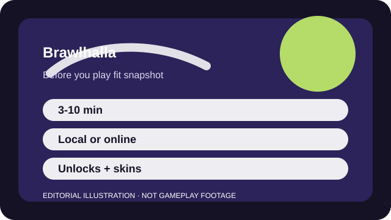

BEFORE YOU PLAY
What this page is and is not
This is a sourced editorial fit profile. It is designed to help with a yes-or-no play decision, and it does not claim a scored hands-on review.
The cleanest first test is local or casual online play. If the knockback, dodges, and weapon cycling click immediately, the game does not need much explanation. If they do not, the short rounds can still keep experimentation painless.
The first-session loop to judge is simple: Learn a legend's weapons, recover to the stage cleanly, and win short exchanges through movement and reads.
Legend familiarity and movement skill matter more than account progression.

FIT SNAPSHOT
Brawlhalla at a glance
| Genre | Platform fighter |
|---|---|
| Platforms | PC, PlayStation, Xbox, Switch, Mobile |
| Business model | Free-to-play platform fighter with character unlocks and cosmetic crossovers. |
| Typical session | 3-10 minute matches that work online, locally, or in quick bursts. |
| Play style | cross-platform fighting game |
| Learning barrier | Brawlhalla is easy to pick up, but movement, dodging, and edge guarding become demanding once ranked interests you. |
| Social shape | It works solo, couch-side, or online with friends, and communication is optional outside serious team play. |
WHO IT FITS
Best fit, likely friction, and the social reality
players who want a free cross-platform fighter that supports short casual or local sessions
players who need a small fixed roster or deep single-player content
It works solo, couch-side, or online with friends, and communication is optional outside serious team play.
Legend familiarity and movement skill matter more than account progression.
FIRST SESSION PLAN
How to test the fit in one evening
- Pick one weapon pair you like instead of constantly chasing the whole roster.
- Play free-for-all or casual modes before ranked formats start shaping your mood.
- Practice recovering back to the stage until losing stocks feels understandable.
- Judge the fit by whether short rematches feel inviting, not by immediate ranked success.
Use the first session to answer these fit questions instead of judging rank, win rate, or store value immediately.
- Do you want fighting-game energy without a huge barrier to first play?
- Is cross-play more important to you than roster prestige or brand legacy?
- Are very short rounds a plus because they lower the commitment to play again?
TIME, COST, AND COMMITMENT
What you are really signing up for
| Session budget | 3-10 minute matches that work online, locally, or in quick bursts. |
|---|---|
| Social demand | It works solo, couch-side, or online with friends, and communication is optional outside serious team play. |
| Progression shape | Legend familiarity and movement skill matter more than account progression. |
| Spending pressure | Entry is free, with optional unlocks, cosmetics, and crossover skins. |
Very short matches make Brawlhalla easy to keep around as a side game even if you never climb seriously.
Entry is free, with optional unlocks, cosmetics, and crossover skins.
SOURCES AND LIMITS
What was checked, and what can change
- The free legend rotation alters what a no-spend player can test immediately.
- Crossover events and seasonal cosmetics can change the surrounding appeal without changing the fundamentals.
- Balance patches can make certain weapons friendlier or rougher for beginners.
This profile uses official game pages and defensible general product knowledge to frame the player fit. It does not claim live testing across every platform, accessibility need, or current event rotation.